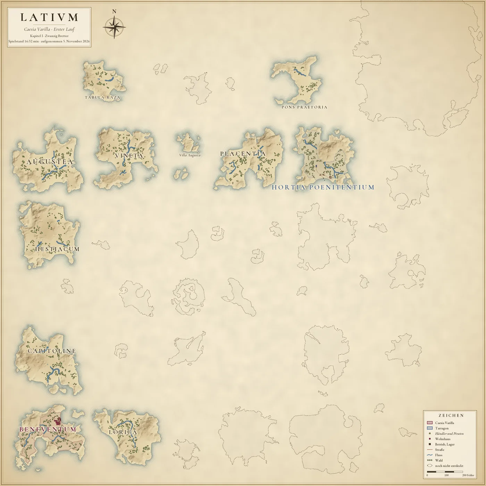
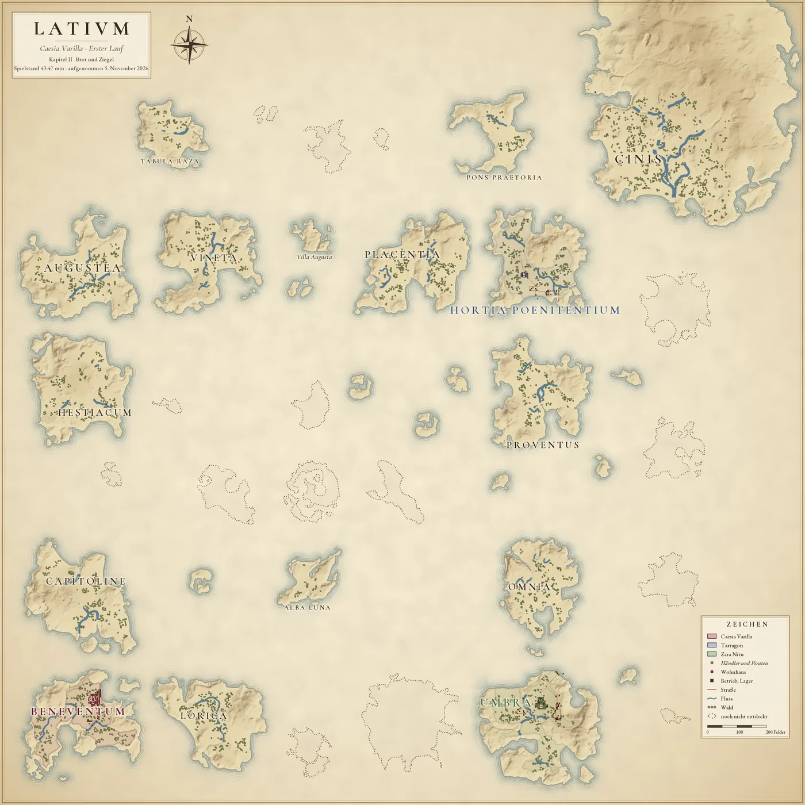
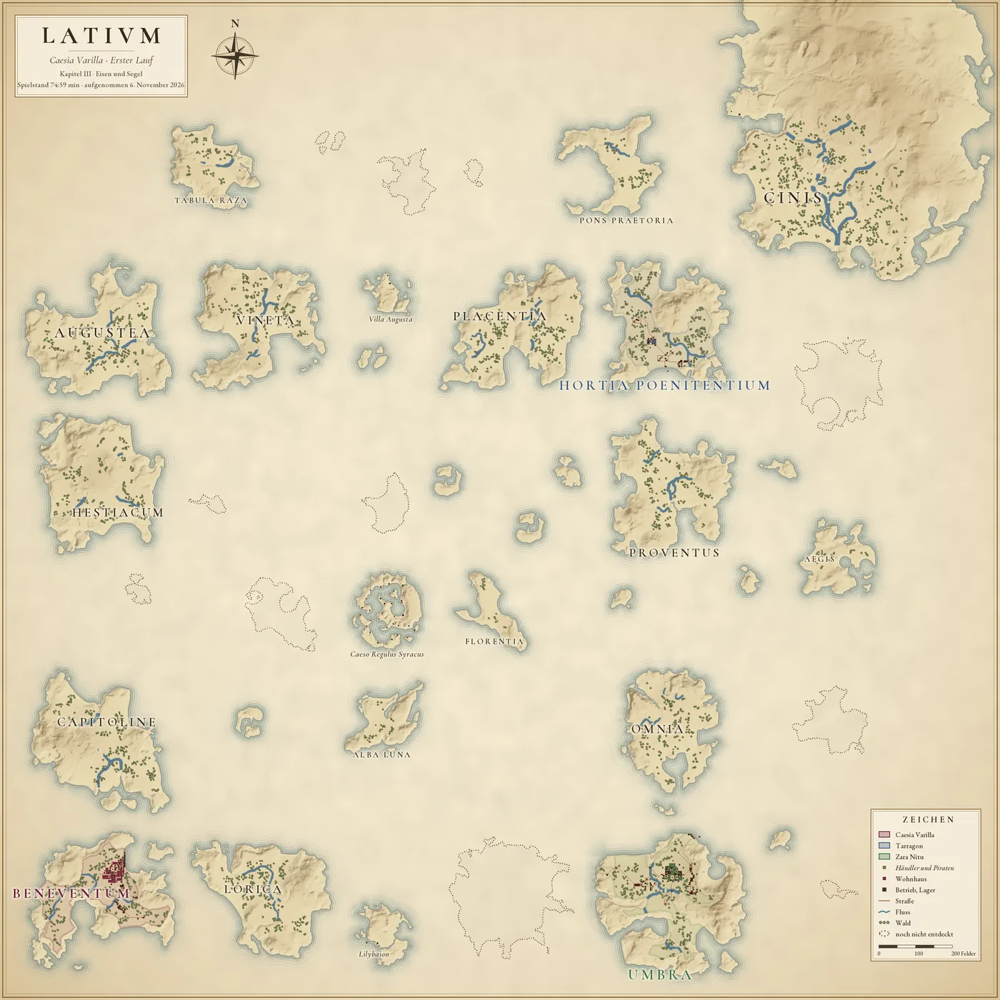
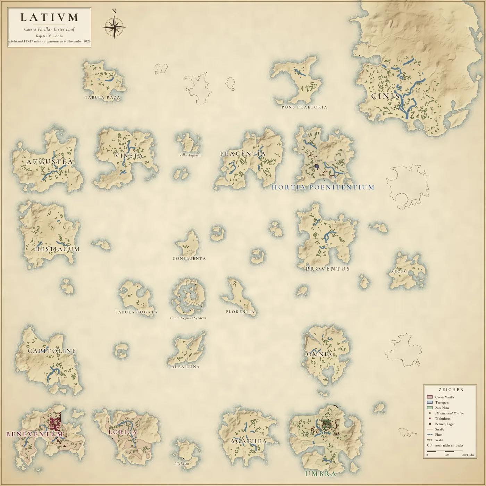
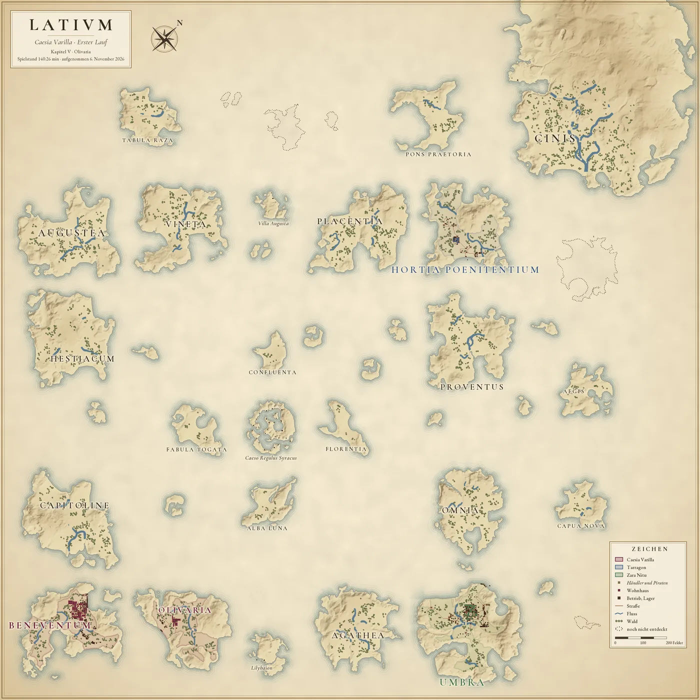

Anno 117 · Pax Romana · Erster Lauf
Die Karte
Caesias Provinz zum Ende jedes Kapitels
Jede Karte zeigt Latium so, wie es im letzten Spielstand vor dem Ende eines Kapitels aussieht. Mit den Ziffern wählst du das Kapitel; ein Klick auf die Karte öffnet sie in voller Größe.

Kapitel I Zwanzig Bretter
0:00 bis 19:33 min Spielzeit · gezeichnet nach dem Spielstand bei 16:32 min, aufgenommen am 5. November 2026
Karte von Latium zum Ende von Kapitel I: Caesias Insel Beneventum. Praetoren: Hortia Poenitentium (Tarragon). Entdeckt sind 11 von 26 Inseln.


Kapitel II Brot und Ziegel
19:33 bis 47:25 min Spielzeit · gezeichnet nach dem Spielstand bei 43:47 min, aufgenommen am 5. November 2026
Karte von Latium zum Ende von Kapitel II: Caesias Insel Beneventum. Praetoren: Hortia Poenitentium (Tarragon); Umbra (Zara Nitu). Entdeckt sind 16 von 26 Inseln.


Kapitel III Eisen und Segel
47:25 bis 75:22 min Spielzeit · gezeichnet nach dem Spielstand bei 74:59 min, aufgenommen am 6. November 2026
Karte von Latium zum Ende von Kapitel III: Caesias Insel Beneventum. Praetoren: Hortia Poenitentium (Tarragon); Umbra (Zara Nitu). Entdeckt sind 20 von 26 Inseln.


Kapitel IV Lorica
75:22 bis 125:17 min Spielzeit · gezeichnet nach dem Spielstand bei 125:17 min, aufgenommen am 6. November 2026
Karte von Latium zum Ende von Kapitel IV: Caesias Inseln Beneventum und Lorica. Praetoren: Hortia Poenitentium (Tarragon); Umbra (Zara Nitu). Entdeckt sind 23 von 26 Inseln.


Kapitel V Olivaria
125:17 bis 146:09 min Spielzeit · gezeichnet nach dem Spielstand bei 140:26 min, aufgenommen am 6. November 2026
Karte von Latium zum Ende von Kapitel V: Caesias Inseln Beneventum und Olivaria. Praetoren: Hortia Poenitentium (Tarragon); Umbra (Zara Nitu). Entdeckt sind 24 von 26 Inseln.

Zeichen der Karte
- Caesia Varilla: ihre Inseln mit purpurnem Rand
- Tarragon
- Zara Nitu
- Athr Iorgwyn
- Händler und Piraten, Namen kursiv
- Wohnhaus, in der Farbe des Besitzers
- Betrieb oder Lager
- Straße
- Fluss
- Wald
- Insel, die Caesia noch nicht entdeckt hat
Wie die Karte entsteht
- Aus dem Spielstand: Lage und Drehung jeder Insel, Wohnhäuser, Betriebe und Lager, Straßen, wem eine Insel gehört und welche Inseln Caesia schon entdeckt hat.
- Aus den Inseldaten des Spiels: Küsten, Höhen, Flüsse und Wald. Der Wald folgt der Vorlage der Insel; wo gebaut ist, fehlt er.
- Namen wie im Spiel. Inseln, die der Spieler umbenannt hat, tragen den neuen Namen ab der Umbenennung.
Gezeichnet für die Chronik vom Anno-Monitor auf dem Rechner des Spielers: Pergament, Wasserlinien, Schummerung, Farben und Schrift. Bilder aus dem Spiel sind nicht verwendet. Jede Karte nennt die Spielzeit ihres Spielstands und den Tag der Aufnahme.